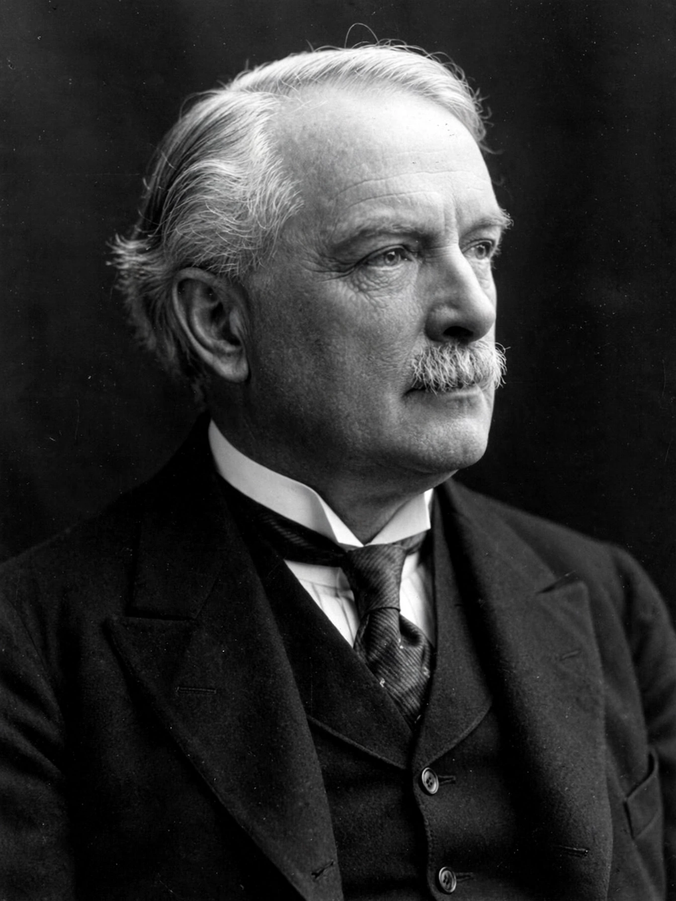

David Lloyd George, 1st Earl Lloyd-George of Dwyfor (17 January 1863 – 26 March 1945) was a Welsh statesman who served as Prime Minister of the United Kingdom from 1916 to 1922. A Liberal, he was the last member of that party to hold the office. As Chancellor of the Exchequer (1908–1915) he laid foundations of the modern welfare state, and as premier he led Britain through the final years of the First World War and negotiated at the Paris Peace Conference.
| David Lloyd George | |
| Born | 17 January 1863, Chorlton-on-Medlock, Manchester, England |
|---|---|
| Died | 26 March 1945 (aged 82), Llanystumdwy, Wales |
| Party | Liberal |
| Prime Minister | 7 December 1916 – 19 October 1922 |
| Other offices | Chancellor of the Exchequer (1908–1915); Minister of Munitions (1915–1916); Secretary of State for War (1916) |

Lloyd George, prime minister during the latter half of the First World War.
Lloyd George was born in Manchester to Welsh parents and raised in Llanystumdwy, Caernarvonshire, by his mother and her brother David Lloyd, a shoemaker and Baptist minister, after his father's early death. A native Welsh speaker, he qualified as a solicitor and built a reputation as a campaigner for Welsh causes and against the privileges of landowners and the established Church. He was elected to Parliament for Caernarvon Boroughs in a by-election in 1890, holding the seat for 55 years.
As Chancellor under H. H. Asquith, Lloyd George introduced old-age pensions (1908) and presented the radical "People's Budget" of 1909, which proposed taxes on land and high incomes to fund social welfare and naval rearmament. The rejection of the budget by the House of Lords provoked the constitutional crisis resolved by the Parliament Act 1911 (see House of Lords reform). His National Insurance Act 1911 established health and unemployment insurance, a cornerstone of the British welfare state.
During the shell crisis of 1915 Lloyd George became the first Minister of Munitions, dramatically expanding arms production. After a brief spell as Secretary of State for War, he replaced Asquith as prime minister in December 1916, heading a coalition government and a small War Cabinet. He clashed with his generals over strategy and the slaughter of offensives such as Passchendaele, supported the convoy system against U-boat losses, and presided over victory in November 1918. At the "coupon election" of December 1918 his coalition won a landslide.
At the Paris Peace Conference of 1919 Lloyd George was one of the "Big Four", steering a middle course between French demands for security and American idealism, and helping shape the Treaty of Versailles and the League of Nations. His government negotiated the Anglo-Irish Treaty of 1921, creating the Irish Free State. The coalition unravelled over honours scandals, the Chanak Crisis with Turkey, and Conservative discontent; after the Carlton Club meeting of October 1922, Conservative MPs voted to fight the next election independently and Lloyd George resigned.
Lloyd George led a diminished Liberal Party, promoting ambitious public-works programmes against unemployment in the 1929 election ("We Can Conquer Unemployment"), but never held office again. He wrote extensive war memoirs, visited and controversially praised Hitler in 1936, and remained an MP until 1945, when he was raised to the peerage as Earl Lloyd-George of Dwyfor shortly before his death. He is widely ranked among the greatest British prime ministers.